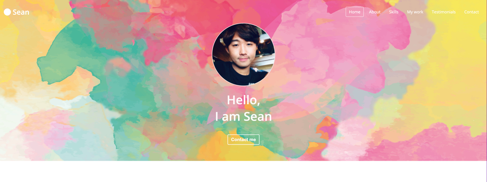
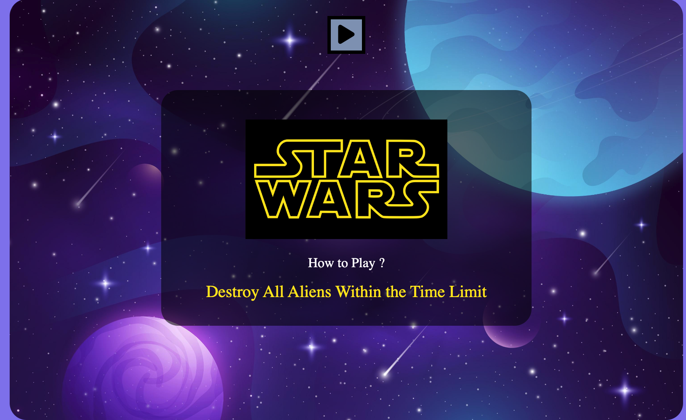
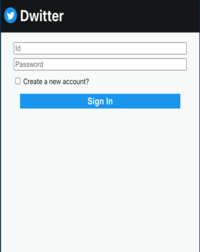
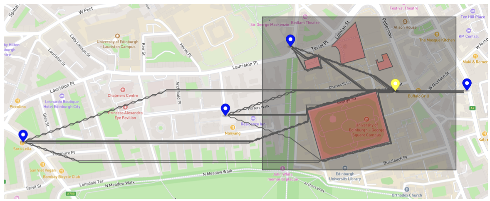
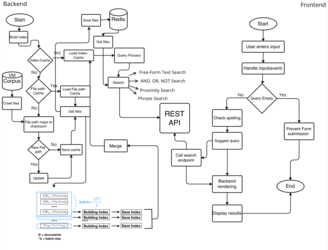
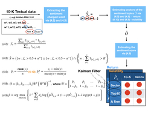
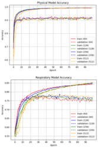

Skills
Skills & Attributes
Entrepreneurship
AI Enthusiast
Fast-Learner
Skills
Tools
- Visual Studio Code
- IntelliJ
- Pycharm
- VIM
- ...
ETC
- Bilingual in English and Korean
- 6th Year Experienced Retail Investor
- Finance
- Fitness Enthusiast - Gym, Surfing, Swimming
My work
Projects

Carrer Portfolio
Creating career-portfolio from the scrach
Catching Game
Destroy all aliens within the time limit
Dwitter(Twitter) Coding
Designing simple version of Twitter
Pizza Drone
This project implements an application of a drone for pizza delivery.A drone departs from Appleton Tower and files and picks up a pizza ordered at a restaurant where it receives orders.

Innovative News Search Engine
Our team has created Revelio, an innovative news search engine that allows users to search for news articles.
Generate of Supervised Sentiment Metrics for Return and Volatility Prediction from 10-K Filings.
This paper introduces an automated system that generates sentiment metrics to support the prediction of stock returns and volatility.
Pong-Pickup-Pro
The bot autonomously moves toward a ball and collect it with suction mechanism.Please, click this image to watch demo and detail description.

A Real-Time Human Activity Recognition Classifier
The real-time HAR model performed 92.6% accuracy with 91.8% F1 score for Task 1 and 74.8% accuracy with 72.6% F1 score for Task 2. Task 1 is to classify 8 types of physical activities, and Task 2 is to classify 8 physical activities along with 4 types of respiratory activities.Testimonial
See what they say about me
I would like to highly recommend Sean with a focus on the application of machine learning to sustainable development in countries and local societies with limited resources.
His passion to the field of geography and real estate is evident in his efforts to develop innovative solutions for automating and simplifying the real estate valuation process.
Through his work, Sean aims to provide companies with an accurate and efficient means of valuing properties, with the ultimate goal of benefiting local communities financially through real estate development.
As someone who has worked with Sean, I can attest to his character, dependability, and punctuality. I am confident that Sean would be a valuable addition to the academic community of the field.
Chanwoo Choi /Layermind Inc.
He has an excellent ability to apply a theory to real cases and find new improvements from feedback.
When founding the LSP programme in my public high school with him, he was the leader and operator running the programme.
LSP is an education programme which is focusing on developing and educating the basic skills of self-improvement in public school environments, which contain time management, planning, habit coaching, and brain-base learning methods.
Also, since this LSP programme is working in a public school environment it should be modified and reformed under the situation.
With the aid of his advice earned from his studies and his operation on the programme himself, the LSP programme can be developed further.
Furthermore, his leadership skill was really helpful for the success of the LSP programme. He, as a co-founder of the programme, faced various difficulties when building it. The subjects of the progremme who is mainly high school student want to easily give up with having difficulties with the programme. However, they can successfully form good habits through his persistent efforts to motivate and persuade them while carefully listening to their difficulties.
Thanks to his devoted efforts and achievements, LSP programme became the official programme in several high schools including my high school while appearing on KBS(Korean Broadcasting System) and The Chosun Ilbo(one of the representative daily newspapers in South Korea)
Choonghoon Kwak /LSP & Kyoung-An High School
Let's talk
007seann@gmail.com